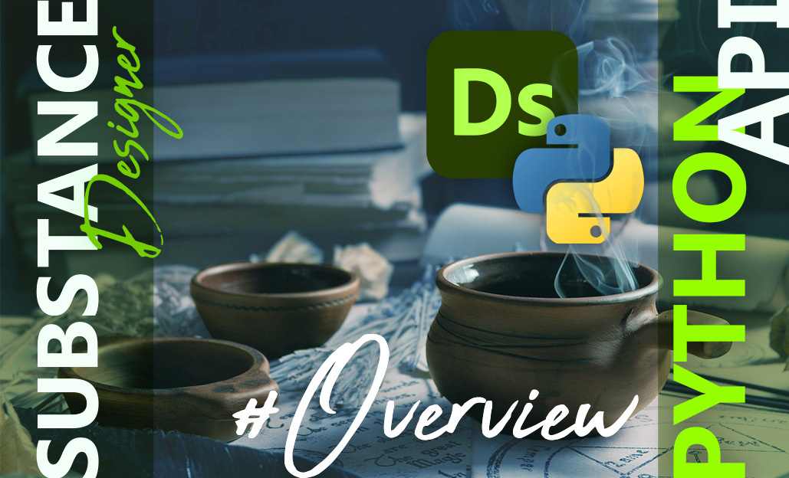
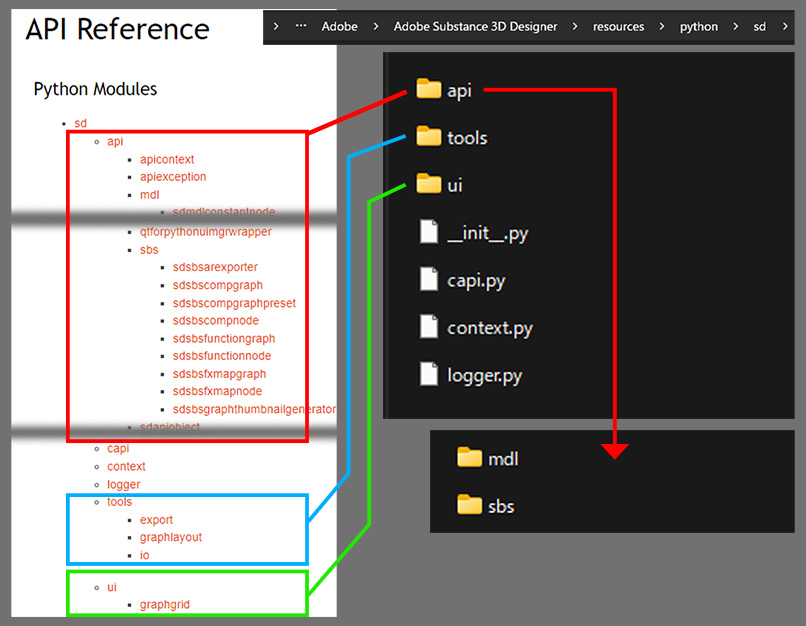

SubstanceDesigner
SubstanceDesigner PythonAPI大解読
- APIの概要 -
2024/03/03

SubstanceDesignerには、標準で組み込まれているPythonAPIがあります。
しかし、参考になる情報源は公式ドキュメントかアプリケーションをインストールした時についてくるAPIリファレンスくらい…。
筆者もプラグインの開発経験はあるものの、全貌を理解しているかと聞かれるとあやしい。。
そこで、「リファレンスを片っ端から調べて記事を書こう」という企画をやろうと思い立ちました。
(めざせSubstanceDesignerマスター！)
APIの概要
まずは、APIリファレンスからクラスの全容を把握します。
(本記事執筆時点のAPIバージョンは13.0.0です。)
PythonAPIのリファレンスは、ツールバーの Help > Scripting documentation から確認できます。
リファレンスのページがブラウザで立ち上がりますが、ページ自体はネット上に公開されているわけではなく、アプリケーションに同梱されているhtmlファイルです。
ちなみに、htmlファイルは以下のパスに置かれています。
C:\Program Files\Adobe\Adobe Substance 3D Designer\resources\documentation\pythonapi\html\index.html
APIの構造
APIリファレンスから、パッケージの構造を以下のように整理しました。

主要な機能は sd.api パッケージにまとめられているようです。
sd.api.mdl はおそらくシェーダー関連の機能だと思うので、CGデザイナーにとって使用頻度が高いであろう sd.api.sbs パッケージを優先して習熟するのが良さそうです。
おまけ
ちなみに、一番物量の多そうな sd.api パッケージ内のモジュールの数を調べてみました。
import os
from glob import glob
api_path = r"C:\Program Files\Adobe\Adobe Substance 3D Designer\resources\python\sd\api\*.py"
mdl_path = r"C:\Program Files\Adobe\Adobe Substance 3D Designer\resources\python\sd\api\mdl\*.py"
sbs_path = r"C:\Program Files\Adobe\Adobe Substance 3D Designer\resources\python\sd\api\sbs\*.py"
print("api: {}".format(sum("__init__.py" not in i for i in glob(api_path))))
print("mdl: {}".format(sum("__init__.py" not in i for i in glob(mdl_path))))
print("sbs: {}".format(sum("__init__.py" not in i for i in glob(sbs_path))))
# >> api: 107
# >> mdl: 35
# >> sbs: 9sd.apiパッケージだけで107個…。ワクワクしてきました。(白目)
まとめ
今回は、これからAPIを習熟していくにあたり、まずはSubstanceDesigner PythonAPIのパッケージの構造を調査しました。
次回以降から、各モジュールの機能をひとつずつ検証していこうと思います。